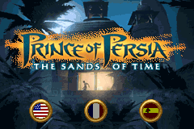

Prince of Persia - The Sands of Time (USA) (En,Fr,Es) (Rev 1)
EEPROM 4K
Cartridge Identity
- Game Code
BPYE(FamilyBPY)- Header Title
PRINCEPERSIA- Maker / Revision
41/ rev1- ROM Size
- 8.0 MiB (8,388,608 B)
- Save Media
EEPROM 4K- SHA-256
36d0d7abff2b6cfa8839f139a51ab5e1c10573effc99a8008af1808f4d9cf355- Engine / SDK Group
comm-019(15 families)
Screenshots


Observed Battery Save Layout
- Fill Byte & Active Size
0x00fill · 116–116 / 512 B active (entropy 1.06 bits/B)- Active Offset Ranges
0x2–0x3,0x5–0x7,0x6A–0x6B,0x6D–0x6F,0xD2–0xD3,0xD5–0xD7,0x13A–0x13B,0x13D–0x13F, +1 more (9 total)- ASCII Magic / Headers
- None detected
- Observed Variable Regions
- 0 bytes across 0 spans: None
- Candidate Checksum/Counter Spans
- None
Hardware MMIO Subsystems
ppu_display0x8087ca8,0x808d960